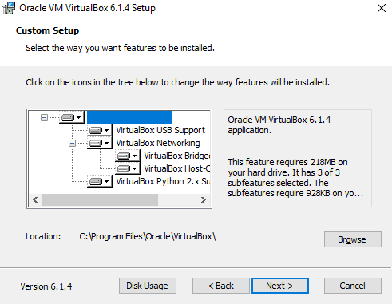
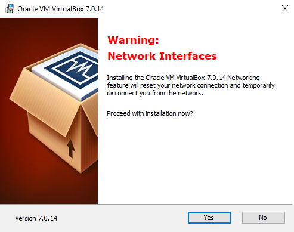
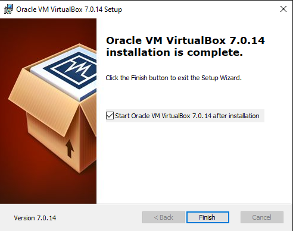
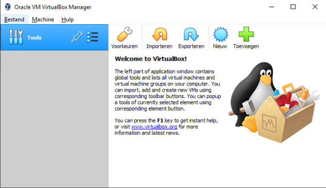

Maquina VirtualBox
La maquina VirtualBox es una aplicación que sirve para hacer máquinas virtuales con instalaciones de sistemas operativos.
Cómo instalar Oracle VM VirtualBox
Paso 1: Ve a la página de Oracle VM VirtualBox en Academic Software y haz clic en el botón 'Descargar Oracle VM VirtualBox' para descargar el instalador.
Paso 2: Abre el archivo de instalación .exe de tu carpeta de descargas y haz clic en Next para iniciar la instalación.
Paso 3: Selecciona los componentes que quieres instalar y haz clic en Next para instalar el software en la ubicación predeterminada. También puedes cambiar la carpeta de destino.
Paso 5: Haz clic en Yes para continuar.
Paso 6:Una vez finalizada la instalación, marca la casilla para lanzar el programa y haz clic en Finish.
El programa está instalado y listo para usar.
Regresar